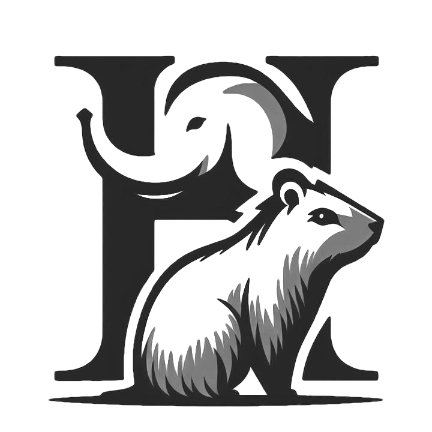

Welcome to the Hyrax Project!
An online resource and digital garden for categorical logic and type theory, formalized in Agda

The Hyrax is the closest living terrestrial relative of the Elephant. Despite its smaller stature, it shares with its larger cousins a high degree of intelligence and social behavior.
The Hyrax Project is a personal wiki & digital garden for the formal exploration of topics in and around categorical logic and type theory, with an emphasis on synthetic mathematics, written by me, Corinthia Beatrix Aberlé.
Aside from serving as my own personal repository of knowledge, Hyrax aims to be an approachable, comprehensive, and explorable resource for learning the topics it encompasses, in the mould of formalization projects such as the 1Lab. To this end, Hyrax is also a literate Agda library consisting of both formally-verified code and explanatory prose.
{-# OPTIONS --rewriting --cohesion --flat-split #-} module index where
However, Hyrax takes a distinct approach to formalization from many of its sister projects, in that it does not aim to use the type theoretic language of Agda to prove results directly, but rather uses this language to construct and compare other theories and languages in which these results may naturally be proved. In other words, instead of using Agda as a foundational system for mathematics, Hyrax uses Agda as logical framework for the invention and exploration of such foundational systems themselves.
This kind of metalinguistic abstraction serves as a key principle of the philosophy of synthetic mathematics, for which Hyrax aims to serve as both exposition and proof-of-concept. For more on the philosophy of synthetic mathematics that underlies Hyrax, see the module What is Synthetic Mathematics?:
-- open import library.synthetic-math
For more on the axiomatic framework underlying Hyrax, and its implementation in Agda, take a look at the module Introduction to Synthetic Agda:
open import library.synthetic-agda
Finally, to get started exploring Hyrax, head on over to the table of contents:
open import library.contents
Related Projects
Although Hyrax aims to be relatively self-contained, ultimately it exists as part of a much larger network of online references and formalization projects in category theory and type theory, several of which directly inspired the conception of Hyrax:
1Lab – an experiment in discoverable formalisation of univalent mathematics in Cubical Agda.
Clowder Project – an online reference work and wiki for category theory and mathematics.
About Me
I am a PhD student studying Pure and Applied Logic in the Computer Science Department at Carnegie Mellon University. My research is focused on type theory, category theory, categorical logic, and applications thereof to programming languages and formal verification. For more about me, see my personal website.
My path into academia has been unorthodox and at times complex. Having completed the equivalent of a high-school education by the age of 14, at that time I chose to devote myself to a career in music as a composer. In the course of pursuing my studies of music, however, I became increasingly interested in mathematics, logic, and computer science, and eventually became determined to study these topics at a research level. However, at that time (around 20 years of age) I had no qualifications in these areas, nor even a high school diploma, and it was primarily through access to online resources for learning these subjects that I was able to get where I am today. As such, I strive to ensure that my own academic work is freely available and easily accessible, as my own small way of giving back to the community.